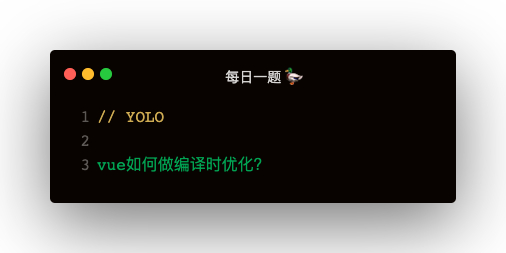

Introduction
每日一题
vue
父组件监听子组件的生命周期
$set解决新增属性不能相应的问题
自定义指令实现图片懒加载
keep-alive
next-tick
vue如何做编译时优化AOT？
如何给Vue定义全局方法
响应式与cteated，$mount，mounted
Published with GitBook
vue如何做编译时优化AOT？

JIT
即时编译：just-in-time compile
React 的模版中允许写 js 代码，然而 vue 的模版中不允许写 js 代码
React 是即时编译，会在执行时把 jsx 编译为 js 代码
Vue 是即时编译兼运行前编译，就看 $options.render 是否存在，存在为运行前编译，反之即时编译
AOT
运行前编译：Ahead-of-time compile
results matching "
"
No results matching "
"